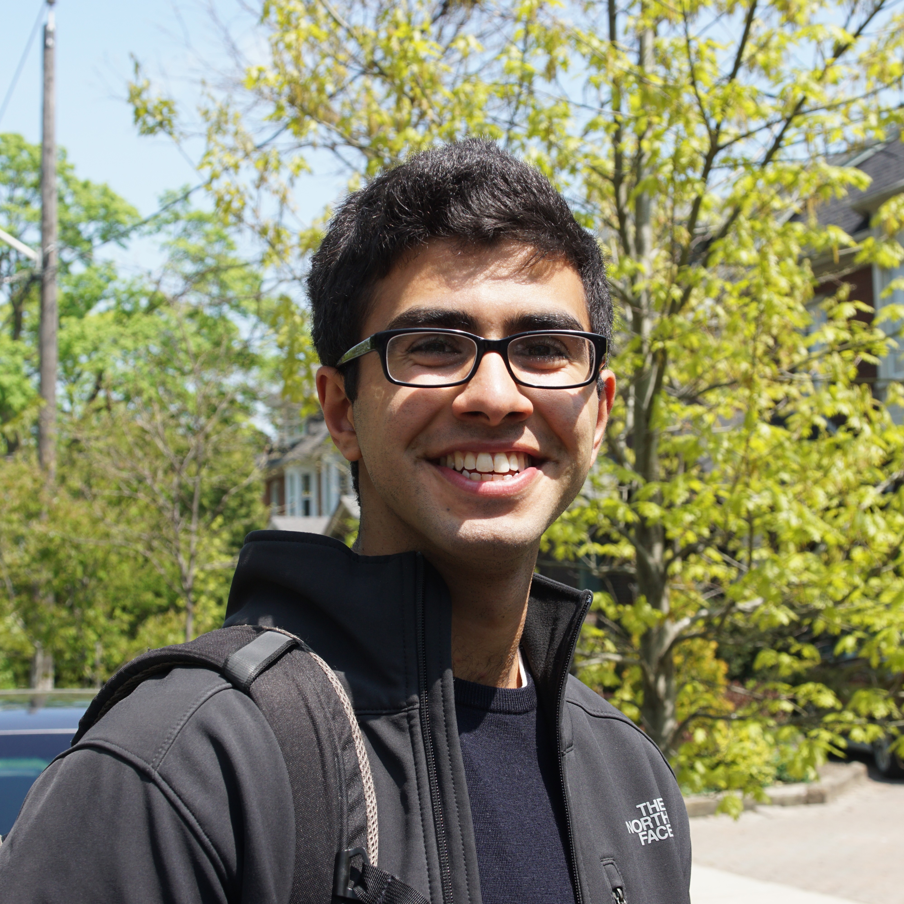

|  | Armin Askari |
My research interests are broadly in optimization, machine learning and control theory. Currently, I'm particularly interested in the following topics:
Design of efficient/scalable algorithms for large scale feature selection
Robust optimization, out-of-sample generalization and domain adaptation
Naive Feature Selection: Sparsity in Naive Bayes
Armin Askari, Alexandre d'Aspremont, Laurent El Ghaoui
AISTATS 2020. [ArXiv]
Linearly Convergent Frank-Wolfe with Backtracking Line-Search
Fabian Pedregosa, Geoff Negiar, Armin Askari, Martin Jaggi
AISTATS 2020. [ArXiv]
Fenchel Lifted Networks: A Lagrange Relaxation of Neural Network Training
Fangda Gu, Armin Askari, Laurent El Ghaoui
SIATST 2020. [ArXiv